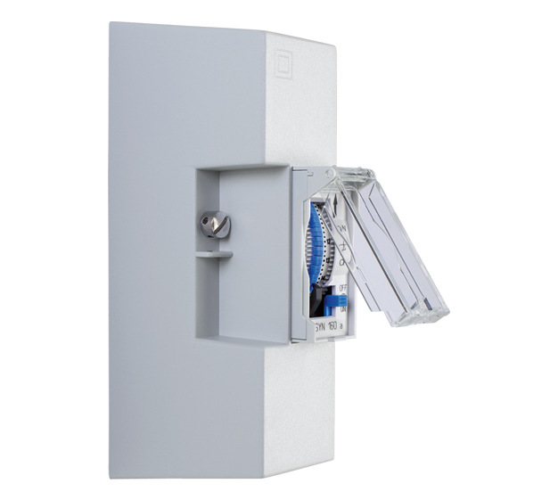
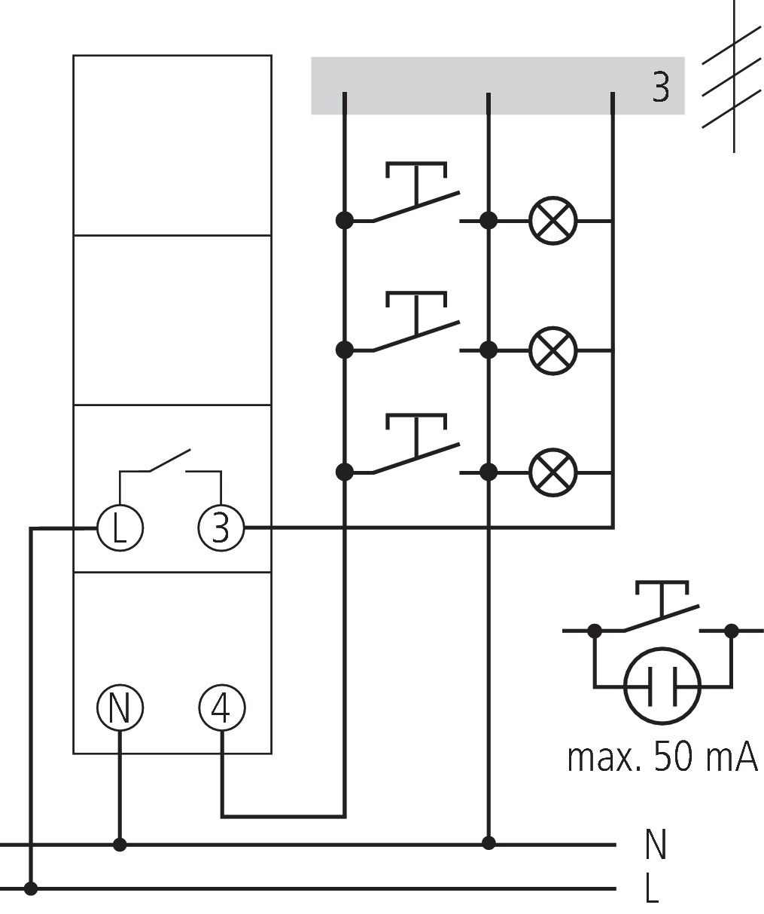
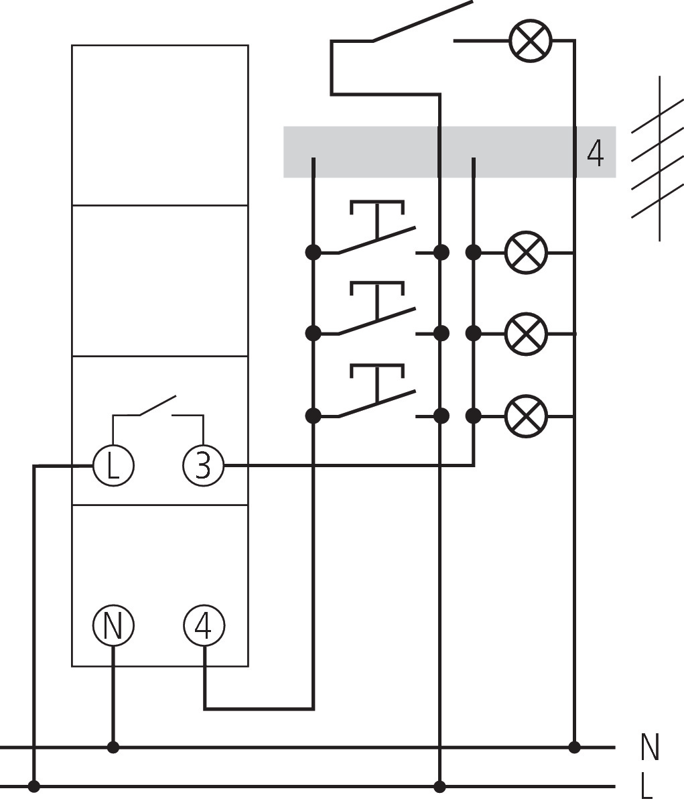
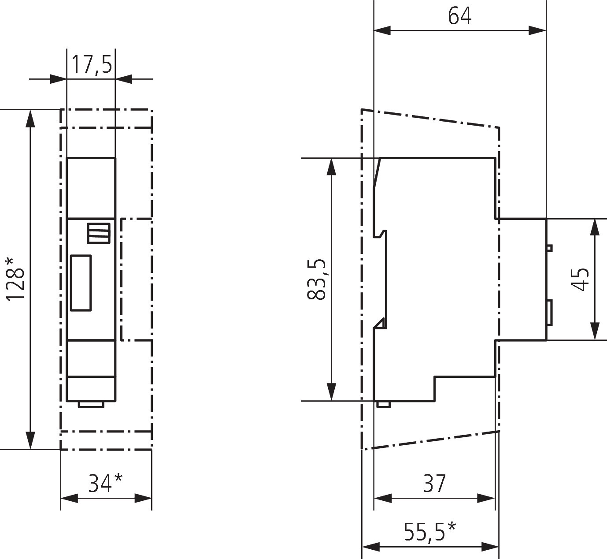
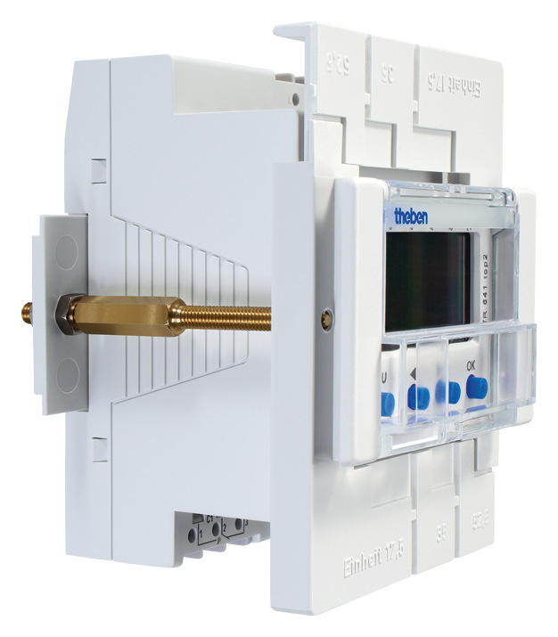

ELPA 8
Timer tangga elektromekanis
STAIRCASE TIME SWITCHLampu menyala.
Lampu menyala.
Mati sesuai waktunya.
Atur durasi penerangan tangga dan koridor selama 1-7 menit, dengan pilihan lampu permanen.
KENALI PRODUK
Informasi ELPA 8
- Timer tangga elektromekanis untuk mengendalikan durasi nyala lampu.
- Waktu nyala dapat diatur 1-7 menit, dengan pembacaan langsung pada skala.
- Dapat dipicu ulang; pengaktifan ulang tersedia setelah 30 detik.
- Sakelar untuk menyalakan lampu secara permanen.
- Penggerak motor sinkron dan mekanisme presisi untuk periode switching yang akurat.
- Tidak mengonsumsi arus saat siaga; sensitivitas terhadap gangguan rendah.
- Mendukung rangkaian 4 kawat dengan koneksi penerangan lantai. Rangkaian 3 kawat tanpa penerangan lantai dicantumkan untuk sistem lama; PDF menyatakan rangkaian tersebut tidak lagi diizinkan untuk sistem baru.
- Nomor produk
- 0080002
- Tegangan / frekuensi
- 230 V AC / 50 Hz
- Instalasi / lebar
- DIN rail / 1 modul (17,5 mm)
- Rentang waktu
- 1-7 menit
- Pengaktifan ulang
- Setelah 30 detik
- Terminal
- Screw terminals
- Standby / rugi daya
- Sekitar 0 W / maksimum 0,7 W
- Beban lampu indikator
- 50 mA
- Rangkaian
- 3 atau 4 kawat
- Kontak / bukaan
- Normally open (NO) / >3 mm
- Output switching
- Tidak potential-free (230 V)
- Kapasitas switching
- 16 A pada 230 V AC, cos φ=1; 6 AX pada 230 V AC, cos φ=0,3
- Lampu pijar / halogen
- 2300 W
- Lampu hemat energi
- 150 W
- LED <2 W
- 30 W
- LED 2-8 W / >8 W
- 300 W / 300 W
- Fluoresen ballast elektronik
- 600 W
- Fluoresen konvensional lead-lag / series-corrected
- 2300 VA / 2300 VA
- Fluoresen konvensional parallel-corrected
- 1300 VA, 70 µF
- Lampu permanen
- Tersedia
- Peringatan sebelum mati
- Tidak tersedia
- Input multi-voltage / zero-cross switching
- Tidak tersedia / tidak tersedia
- Approval / proteksi
- VDE / IP20 / kelas II
- Material
- Thermoplastic tahan temperatur tinggi, self-extinguishing
- Suhu lingkungan
- -10 hingga 50 °C



Diagram mengacu pada dokumen produk ELPA 8. Kesesuaian rangkaian perlu diperiksa saat pemasangan.
Kapasitas beban lampu dapat berbeda menurut jenis lampu yang digunakan. Konfirmasikan kesesuaian beban saat pemilihan produk.
Aksesori kompatibel
